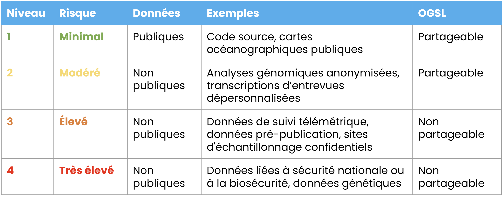

Données sensibles
Qu’est-ce qu’une donnée sensible ?
Le terme «données sensibles» englobe toutes les données qui doivent être protégées contre une divulgation non désirée. L'accès à ces données doit être restreint, voire interdit. Leur protection peut être requise pour des raisons juridiques, éthiques, relatives à la vie privée ou à la propriété intellectuelle. Bien que les données sensibles soient souvent associées à la recherche impliquant des êtres humains, il est important de savoir que toutes les disciplines peuvent produire des données sensibles sous différentes formes et à divers niveaux de risque. Les données sensibles peuvent concerner des groupes sociaux, des organisations, la faune, des habitats ou des technologies propriétaires.
Catégories courantes de données sensibles:
- Données biomédicales: informations génétiques, physiologiques ou liées à la santé provenant d’êtres humains, d’animaux ou de plantes. Cela peut inclure des mesures de laboratoire, des échantillons de tissus ou des séquences génétiques pouvant révéler des caractéristiques ou des vulnérabilités sensibles.
- Données personnelles: informations permettant d’identifier une personne, directement ou indirectement. Adresse et numéro de téléphone personnels, numéro d’identification gouvernemental, attributs économiques, culturels ou sociaux.
- Données confidentielles: informations protégées par des droits de propriété intellectuelle, des secrets commerciaux, des documents internes d’organisation ou tout matériel pouvant affecter la compétitivité ou la sécurité. Cela peut également inclure des données liées à la sécurité nationale.
- Données environnementales: emplacements précis d’espèces menacées, d’habitats vulnérables, de sites archéologiques ou d’autres zones d’importance écologique ou culturelle. Les coordonnées exactes d’échantillonnage, les calendriers détaillés des relevés et les informations d’identification des spécimens peuvent également relever de cette catégorie.
Il est important de noter que même lorsque des jeux de données pris individuellement semblent non sensibles, leur combinaison peut créer de nouveaux risques. Le croisement de différentes sources peut permettre la réidentification de participants à une recherche ou révéler l’emplacement exact d’espèces ou de ressources qui devraient demeurer protégées.
Pourquoi faire preuve de prudence dans le partage des données ?
Le partage de données sensibles sans mesures de protection appropriées peut engendrer des risques importants pour les individus, les communautés, les institutions et les écosystèmes. Ces risques varient selon la nature des données, mais peuvent être regroupés en trois catégories:
- Risques individuels, notamment atteinte à la réputation, discrimination ou stigmatisation, ainsi que détresse émotionnelle ou psychologique.
- Risques collectifs, incluant la mise en danger d’espèces vulnérables, d’habitats ou de sites culturellement significatifs, ainsi que la divulgation non souhaitée de savoirs ancestraux, traditionnels ou communautaires.
- Risques institutionnels, comprenant des sanctions juridiques ou réglementaires en cas de non-conformité, la perte de financement ou de partenariats, ainsi que la violation d’accords de propriété intellectuelle ou de confidentialité.
Ces risques peuvent également nuire à la confiance entre les chercheurs, les institutions, les partenaires et les communautés ou écosystèmes concernés. Une mauvaise gestion des données sensibles peut compromettre l’intégrité scientifique, fragiliser les collaborations et réduire la volonté des participants ou des communautés de s’engager dans de futures recherches. Pour ces raisons, il est essentiel de planifier soigneusement la manière dont les données sensibles seront collectées, stockées, traitées et partagées, quel que soit le domaine ou le contexte de recherche.
Déterminer le niveau de sensibilité
La responsabilité de déterminer le niveau de sensibilité incombe au producteur des données. Cette évaluation devrait être guidée par plusieurs éléments clés : * Le respect de tout accord, écrit ou verbal, conclu avec les participants, les communautés ou les propriétaires des données, * La conformité aux politiques institutionnelles, aux réglementations nationales et aux cadres juridiques pertinents, * Des considérations éthiques et morales visant à protéger la vie privée, la sécurité et la confiance des participants à la recherche et de leurs communautés, * La reconnaissance que la sensibilité peut évoluer dans le temps ; par exemple, une fois un article scientifique publié, certains risques réputationnels peuvent diminuer, tandis que d’autres peuvent persister ou même augmenter selon le contexte.

Adaptée de la classification des risques de Calcul Québec.
Comment collecter des données sensibles
Le consentement éclairé doit guider la collecte des données sensibles. Il peut prendre la forme d’un accord signé entre le chercheur et les participants, mais peut également être obtenu par une discussion claire et transparente sur l’utilisation des informations. À cette étape, il est aussi important de considérer le potentiel de réutilisation future des données et de convenir avec les participants des conditions dans lesquelles cette réutilisation est acceptable. L’essentiel est que les participants comprennent pleinement l’objectif de la recherche, les données qui seront collectées, la manière dont elles seront gérées, ainsi que les impacts ou risques potentiels.
Comment stocker des données sensibles
Le stockage sécurisé des données sensibles est essentiel pour prévenir tout accès non autorisé ou toute perte. Les bonnes pratiques de stockage s’appliquent à toutes les données de recherche, mais les données sensibles nécessitent une couche de protection supplémentaire afin d’éviter tout accès indésirable ou non autorisé:
- Chiffrement : encodage des données afin que seules les personnes disposant de la clé de déchiffrement appropriée puissent y accéder. Cela ajoute une couche de protection importante, particulièrement lors du transfert ou du stockage sur des systèmes partagés.
- Emplacements de stockage sécurisés : utilisation de serveurs institutionnels ou de services infonuagiques certifiés répondant à des normes de sécurité reconnues. Ces environnements comprennent généralement des contrôles d’accès robustes, des journaux d’audit et des mises à jour de sécurité régulières.
- Mécanismes de contrôle d’accès : restriction de l’accès aux seules personnes ayant besoin des données pour accomplir leur travail. Cela peut inclure la protection par mot de passe, l’authentification multifactorielle ou l’attribution d’autorisations spécifiques selon les rôles.
Cette approche permet de garantir que les données sensibles demeurent protégées même en cas de défaillance matérielle, de suppression accidentelle ou de faille de sécurité.
Comment analyser des données sensibles
Afin de réduire les risques d’identification lors de l’analyse, les chercheurs peuvent appliquer différentes techniques selon la nature des données et le niveau de détail requis.
- Agrégation : fournir des valeurs synthétiques plutôt qu’individuelles. Cela peut inclure la présentation de moyennes au lieu de mesures individuelles, ou le regroupement de personnes dans des catégories ou communautés plus larges. Par exemple, regrouper des espèces par genre ou utiliser le salaire moyen plutôt que les salaires individuels.
- Généralisation : réduire la précision de certaines variables. Par exemple, remplacer des intitulés de poste spécifiques par des catégories plus larges comme « gestionnaire », ou élargir les zones géographiques au lieu de fournir des coordonnées précises.
- Anonymisation (irréversible) : suppression de tous les identifiants directs et indirects de manière à rendre toute réidentification impossible. Une fois anonymisées, les données ne peuvent plus être retracées jusqu’à leur source d’origine.
- Dépersonnalisation (pseudonymisation) : remplacement des identifiants par des codes tout en conservant une clé sécurisée et distincte permettant la réidentification si cela est nécessaire et éthiquement justifié. Cette approche protège la vie privée tout en permettant des analyses ultérieures ou une validation si requis.
Lors du choix d’une technique de transformation des données, il est important de préserver les variables pertinentes pour la question de recherche. Par exemple, si l’objectif est de comparer les attitudes environnementales selon les groupes d’âge, il peut être nécessaire de conserver les catégories d’âge tout en généralisant d’autres détails moins pertinents pour l’analyse et en préservant l’anonymat des participants.
Données de biodiversité
Plusieurs variables peuvent être ajustées afin de réduire la sensibilité des données sur la biodiversité, notamment:
- Les dates, qui peuvent être généralisées à l’année (tout en restant conformes à la norme ISO).
- L’identification taxonomique, qui peut être rapportée à un rang supérieur (par exemple, le genre ou la famille plutôt que l’espèce).
- Le type de signalement, où les données peuvent être exprimées en présence/absence plutôt qu’en nombre exact d’observations.
La localisation précise d’une observation peut également être sensible, en particulier lorsqu’elle concerne des espèces vulnérables ou menacées. Pour les données de biodiversité, OBIS (Ocean Biodiversity Information System) utilise des polygones en WKT (Well-Known Text) afin de généraliser spatialement ou d’obscurcir les données sensibles en définissant une zone géographique — plutôt qu’un point précis — où l’occurrence est rapportée. Au lieu de publier des coordonnées exactes, l’enregistrement est associé à un polygone représentant une unité plus large, comme une cellule de grille, une zone protégée ou une limite définie sur mesure. Le format WKT encode la géométrie de ce polygone sous forme de chaîne de texte normalisée, ce qui facilite son stockage, son partage et son interprétation de manière cohérente entre différents systèmes géospatiaux. En reliant les données d’occurrence à ces polygones, OBIS conserve un contexte spatial utile pour l’analyse écologique tout en réduisant le risque de révéler des localisations sensibles.
Comment partager des données sensibles
Pour être partagées publiquement en toute sécurité, que ce soit par le biais d’une publication scientifique ou sous forme de jeu de données, les données sensibles doivent souvent subir des modifications visant à réduire ou éliminer la possibilité d’identifier des individus, des communautés, des organismes ou des emplacements précis.
Conclusion
Les données sensibles doivent être manipulées avec soin à chaque étape du projet de recherche, de la collecte à l’analyse, au stockage et au partage. Lorsqu’elles sont gérées de manière responsable, elles peuvent également ouvrir la voie à de nouvelles perspectives et orientations de recherche. La gestion adéquate des données sensibles nécessite:
- L’évaluation des risques,
- L’application de méthodes sécurisées de stockage et de traitement,
- L’exercice d’un jugement éthique,
- La vérification des données avant publication,
- Et l’adaptation des mesures de protection au fil du temps.